Return đơn Dropship Part (chưa nhập kho DLR & DLR Stock)
DMS <=> ERP D365 F&O – ERP tạo SO Return, DMS tạo SO Return, hoàn tất khi post invoice / hủy Shipment gốc hoặc xuất kho qua DO khi DLR đã nhập kho
| Ticket | 5994 – Quy trình return SO Dropship của Part |
|---|---|
| Môi trường | Partial và QA (Sandbox) – API đã triển khai; kiểm chứng trên QA ngày 23/10/2026 và test toàn luồng trên Partial ngày 28/10/2026. Cập nhật 02/11/2026: Record Type DO Return Dropship, Auto-complete DO, Create Offset SO và xử lý ERP gửi lặp đã triển khai trên Partial và QA |
| Đối tượng | Purchase Order (loại Dropship), Sales Order (Record Type Part Sales Order và SO Dropship Return), Delivery Order (Part DO), Shipment (Dealer), Inventory Transaction (Goods Receipt, Goods Issue), D365FO Hook |
| Trường hợp | 1. Return Dropship khi Đại lý chưa nhập kho xong: Shipment của Đại lý chưa Completed.2. Return Dropship khi Đại lý đã nhập kho (DLR Stock): Tạo Part DO từ SO Return, Post Update DO (Pick, Pack, Goods Issue), trừ tồn kho Đại lý và tạo SO bán bù. |
| Tài liệu liên quan | Bản đặc tả kỹ thuật theo bước: 5994 - Quy trình return SO Dropship của Part.md (thư mục Quy trình lớn), Test Case: IVC_5994_TC_v1.csv |
1. Luồng DLR Non-Stock (Đại lý chưa nhập kho)
Hướng dẫn theo từng bước của quy trình ERP – DMS (đánh số bước 1 → 10), chỉ gồm các bước diễn ra trên DMS. Mỗi thao tác mang nhãn dạng Bước 8.1.a: số đứng trước là bước trong quy trình, chữ cái là thao tác con trong bước đó. Ảnh chụp từ môi trường Partial ngày 28/10/2026, giao diện tiếng Anh của tài khoản quản trị. Phần lớn các bước là tự động: người dùng DMS chỉ cần kiểm tra kết quả.
SO_Return (DH-00187223) và Sync_InvoiceSO (DH-00187225) được chèn thủ công đúng như ERP gửi (payload lấy từ hook thật DH-00181756). Phía DMS (tạo SO Return, hoàn tất SO, hủy Shipment) chạy thật. Dữ liệu nền là chuỗi Dropship thật trên Partial (Đại lý C0001 – CÔNG TY TNHH KINH DOANH ÔTÔ NISU): PO PSPO0001383, SO ARSO0004685 (ERP: ARSO0034754), Shipment SM-000396. SO Return test mang mã ERP ARSO-UM5994B, hóa đơn trả ARCN-UM5994B, hóa đơn gốc ARIN0066182. Chuỗi này từng có một SO Return thử cũ (ARSO0034755, chạy trước khi có tính năng hủy Shipment nên Shipment chưa bị hủy); lần này SO Return mới xử lý đúng.
1.1. Bước 1 – Đại lý lên đơn đặt hàng PO Dropship DLR · Thủ công
- Bước 1.a Đại lý tạo PO loại Dropship (PO Type: Dropship – Đơn hàng giao thẳng từ NCC) và gửi duyệt. Ví dụ: PO PSPO0001383. Khi PO ở trạng thái Approved là xong bước này, hệ thống chuyển sang Bước 2.
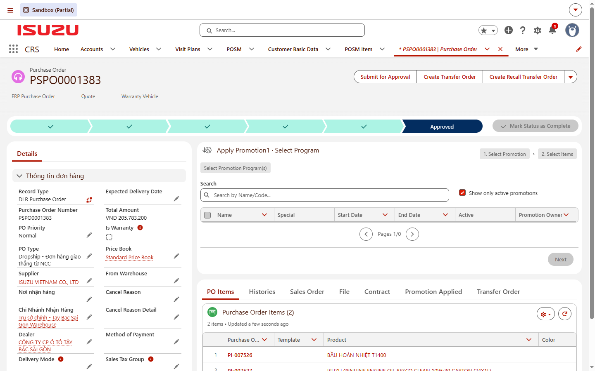
Hình 1 – Bước 1.a: PO Dropship PSPO0001383 đã Approved.
1.2. Bước 2 – Hệ thống tự tạo SO theo nhà cung cấp IVC Tự động
- Bước 2.a Khi PO được duyệt, hệ thống tạo SO Dropship (Record Type DLR Part Sales Order, SO Type Dropship, tham chiếu PO) và đồng bộ lên ERP. Mở SO ARSO0004685 để kiểm tra: ERP Sales Order
ARSO0034754, trạng thái Delivery, Đại lý C0001. Field Original Shipment và Sales Order Ref còn trống vì chưa có Return.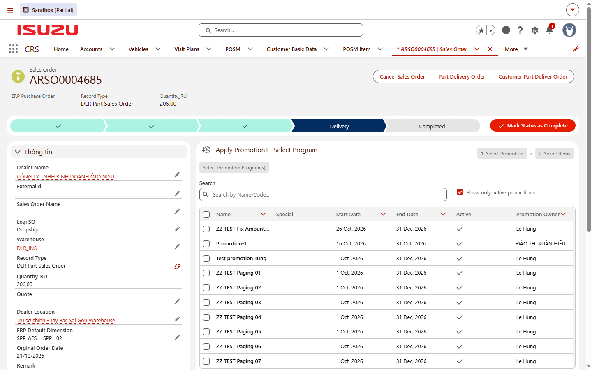
Hình 2 – Bước 2.a: SO Dropship gốc ở trạng thái Delivery.
1.3. Bước 7.1 – Hệ thống tự tạo Shipment cho Đại lý (đã có thông tin invoice) Tự động
Kích hoạt sau khi ERP post Invoice Journal SO (Bước 7 trên ERP).
- Bước 7.1.a Mở Shipment của Đại lý: SM-000396, Shipment Type = Dropship, thuộc PO PSPO0001383, trạng thái Creation (Đại lý chưa nhập kho xong), tổng số lượng 10.
Hình 3 – Bước 7.1.a: Shipment SM-000396 ở trạng thái Creation. - Bước 7.1.b Shipment đã gắn hóa đơn từ ERP. Mở Invoice INV-ARIN0066182: số hóa đơn ERP nằm ở field JournalId (
ARIN0066182). Đây là khóa để hệ thống tìm Shipment gốc khi Return (Bước 10).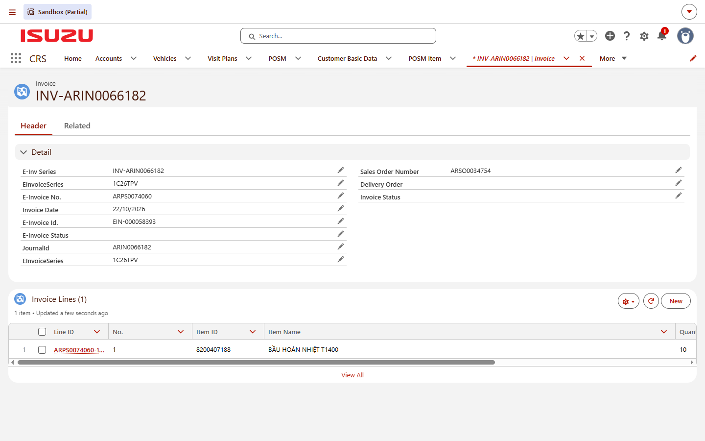
Hình 4 – Bước 7.1.b: Invoice INV-ARIN0066182, JournalId = ARIN0066182, thuộc SO ARSO0034754.
1.4. Bước 7.2 – Goods Receipt (GR) ở trạng thái Draft Tự động
- Bước 7.2.a Hệ thống tự tạo Goods Receipt (Record Type Parts Receipt Note) ở trạng thái Draft cho Shipment, chờ Đại lý nhập kho. Mở GR GRP-20261022-00001: Shipment trỏ về SM-000396, Status = Draft.
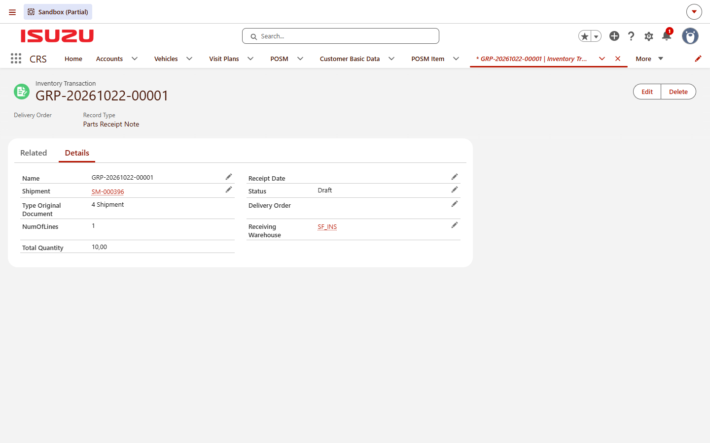
Hình 5 – Bước 7.2.a: GR GRP-20261022-00001, Status = Draft, thuộc Shipment SM-000396.
1.5. Bước 8.1 – Hệ thống tự tạo SO Return trên DMS Tự động
Kích hoạt khi người dùng ERP tạo SO Return và chuyển Confirmed (Bước 8 trên ERP); ERP gọi hook SO_Return về DMS. Không cần thao tác trên DMS.
- Bước 8.1.a Kiểm tra hook: mở D365FO_Hook mới nhất (ví dụ DH-00187223), isRun và isSuccess được tích, Message ghi "Success: Created Sales_Order__c …".
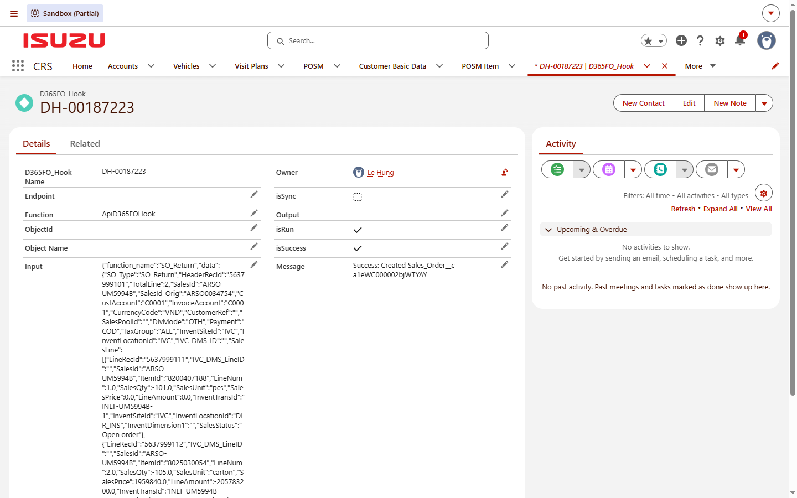
Hình 6 – Bước 8.1.a: Hook SO_Return (DH-00187223) xử lý thành công. - Bước 8.1.b Mở SO Return vừa tạo (ARSO0004963): thanh trạng thái ở Open; Record Type SO Dropship Return; Sales Order Ref trỏ về SO gốc ARSO0004685; ERP Sales Order là số SO Return trên ERP; Quantity_RU âm (-206) vì là đơn trả hàng.
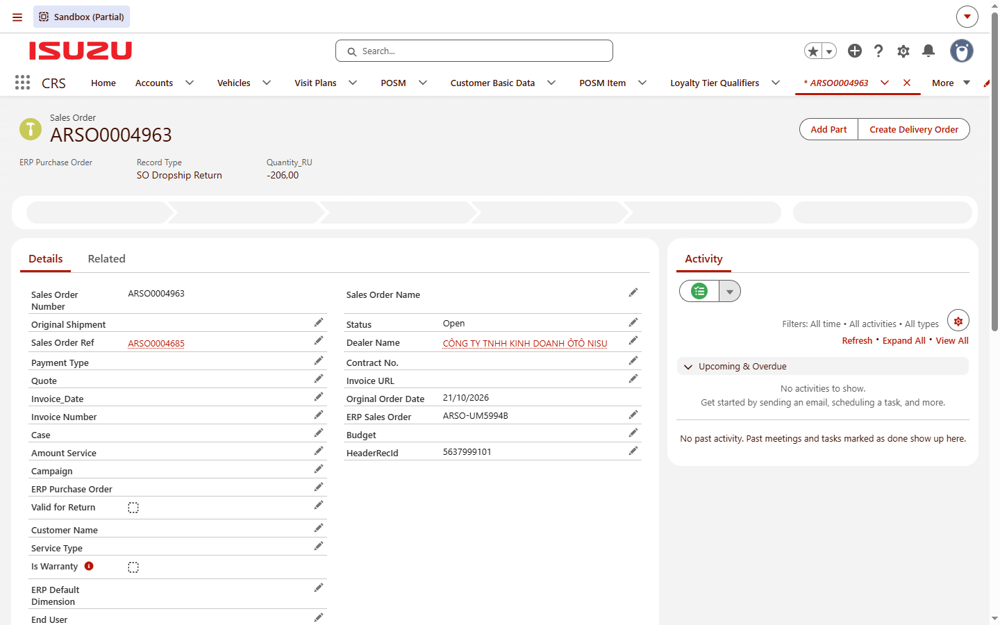
Hình 7 – Bước 8.1.b: SO Return ở trạng thái Open, liên kết SO gốc. - Bước 8.1.c Mở SO Return ARSO0004963, tab Related → Sales Order Item: các dòng trả hàng (mã item, số lượng âm, đơn giá) đã được tạo, sản phẩm gắn theo mã item. SO Return kế thừa PO gốc (PSPO0001383) nên PO gốc vẫn được giữ.
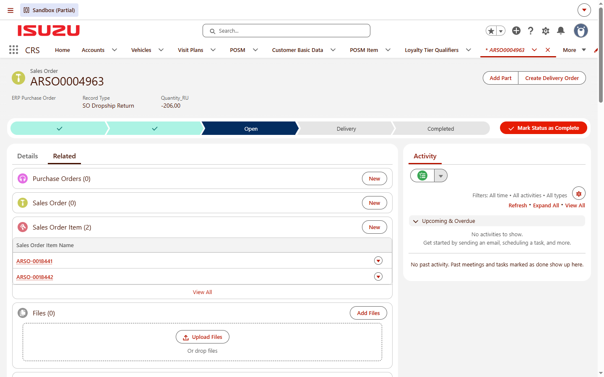
Hình 8 – Bước 8.1.c: SO Return có 2 dòng Sales Order Item (số lượng âm).
1.6. Bước 8.2 – Tự động hủy GR Chưa có
- Bước 8.2.a Theo quy trình, khi có SO Return hệ thống phải tự hủy GR của Shipment gốc. Hiện chưa được hiện thực: sau Bước 8.1 và cả sau Bước 10, GR GRP-20261022-00001 vẫn ở trạng thái Draft (Hình 9, chụp sau khi Shipment đã Cancelled).

Hình 9 – Bước 8.2.a: GR GRP-20261022-00001 vẫn Draft dù Shipment SM-000396 đã Cancelled.
1.7. Bước 10 (phần DMS) – Hoàn tất SO Return và xử lý Shipment gốc Tự động
Kích hoạt khi kế toán post Invoice Journal cho SO Return trên ERP (phần ERP của Bước 10); ERP gọi hook Sync_InvoiceSO kèm số hóa đơn trả (InvoiceId) và số hóa đơn gốc (InvoiceId_Orig). Không cần thao tác trên DMS.
- Bước 10.a Kiểm tra hook DH-00187225: Message ghi "Success: Completed Sales_Order__c … Hủy 1 Shipment gốc."
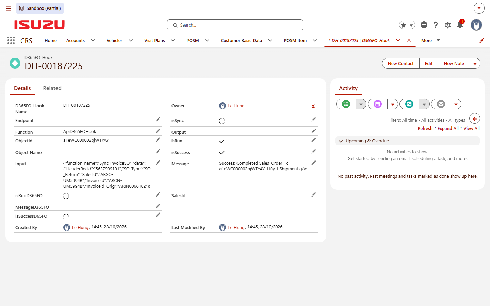
Hình 10 – Bước 10.a: Hook Sync_InvoiceSO (DH-00187225) thành công; Input thể hiện InvoiceId và InvoiceId_Orig. - Bước 10.b Mở lại SO Return ARSO0004963: thanh trạng thái đã Completed; Invoice Number = số hóa đơn ERP gửi; Original Shipment trỏ về Shipment gốc bị hủy (SM-000396).
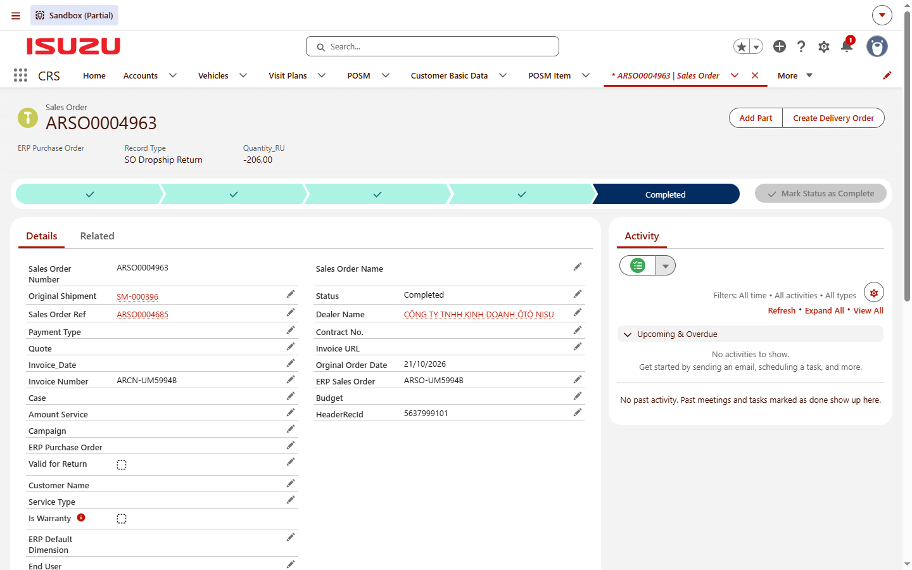
Hình 11 – Bước 10.b: SO Return Completed, có Invoice Number và Original Shipment. - Bước 10.c Bấm vào Original Shipment (hoặc mở SM-000396): Shipment gốc chưa nhập kho đã chuyển sang Cancelled (trước đó là Creation). Shipment đã nhập kho (Completed, hoặc đã có Goods Receipt Completed) thì không bị hủy: hệ thống giữ nguyên và gắn hai chiều với Return DO (Delivery Order.Original Shipment = Shipment gốc, Shipment.Return Delivery Order = Return DO) để biết DO trả hàng này thuộc Shipment nào.
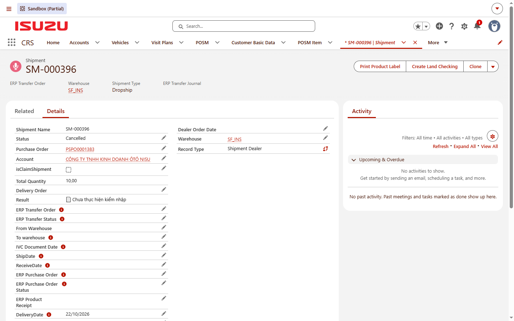
Hình 12 – Bước 10.c: Shipment SM-000396 trạng thái Cancelled. - Bước 10.d Kiểm tra SO Dropship gốc ARSO0004685: không bị thay đổi (vẫn Delivery), để PO gốc và SO gốc tiếp tục dùng được (kể cả khi SO gốc còn đang Post Partial).
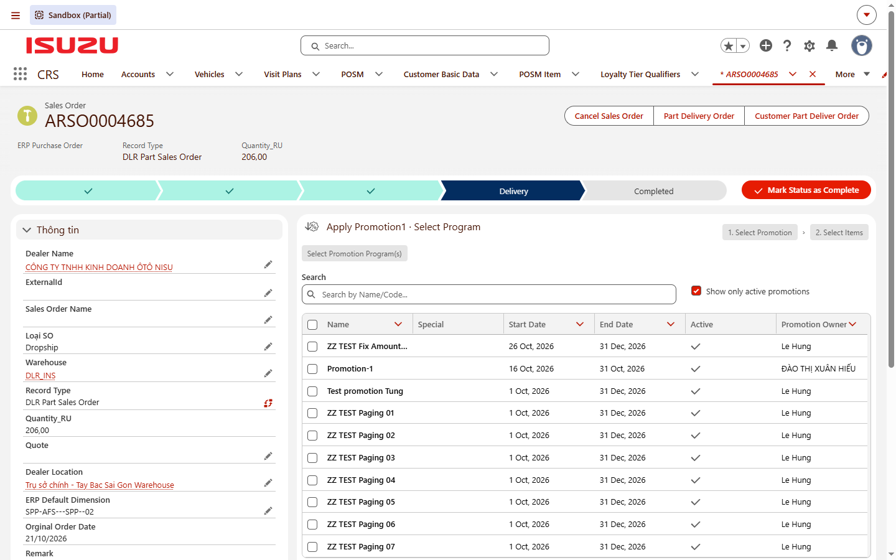
Hình 13 – Bước 10.d: SO gốc vẫn ở Delivery sau khi hoàn tất SO Return. - Bước 10.e ERP gửi lặp hook
Sync_InvoiceSOkhi SO Return đã Completed với cùng số hóa đơn: hệ thống không đổi SO Return (Status, Invoice Number giữ nguyên) nhưng vẫn xử lý lại Shipment gốc (các bước đều lặp lại an toàn). Nhờ vậy nếu lần gửi trước chưa gắn được Shipment gốc / Return DO (ví dụ Return DO tạo sau khi SO đã Completed) thì lần gửi lặp sẽ bù. Message của hook bắt đầu bằng "Skipped: …" kèm kết quả xử lý Shipment.
1.8. Kết quả test thực tế (Partial, 28/10/2026, dữ liệu mới)
| Bước | Kiểm tra | Kết quả | Ghi chú |
|---|---|---|---|
| 1, 2 | PO Dropship Approved, SO Dropship gốc tự tạo | Đạt | PSPO0001383, SO ARSO0004685 (ERP ARSO0034754) |
| 7.1 | Shipment của Đại lý có invoice | Đạt | SM-000396 (Creation), Invoice JournalId ARIN0066182 |
| 7.2 | GR tự tạo ở trạng thái Draft | Đạt | GRP-20261022-00001 (có trên Partial; chưa có trên QA) |
| 8.1 | Hook SO_Return tạo SO Return | Đạt | DH-00187223: ARSO0004963, Record Type SO Dropship Return, Open, 2 dòng item, kế thừa PO và SO Type từ SO gốc. Dealer hiển thị đúng Đại lý C0001. Lưu ý: mã Đại lý bị trùng Account trên Partial (ví dụ C0016) thì Dealer hiển thị "REMOVED DUP" – lỗi dữ liệu |
| 8.2 | Tự hủy GR | Chưa có | GR vẫn Draft |
| 10.a, 10.b | Hook Sync_InvoiceSO hoàn tất SO Return | Đạt | DH-00187225: SO Return Completed, Invoice Number lưu đúng |
| 10.c | Hủy Shipment gốc theo InvoiceId_Orig | Đạt | SM-000396 (Creation) chuyển Cancelled; Original Shipment trên SO Return trỏ đúng |
| 10.d | SO gốc và PO gốc giữ nguyên | Đạt | SO gốc vẫn Delivery |
| 10 | Ngày post invoice | Chưa có | Hook không có ngày hóa đơn; Invoice_Date và Complete Date trên SO Return để trống |
2. Luồng DLR Stock (Đại lý đã nhập kho)
2.1. Tổng quan, badge và điều kiện đầu vào
Áp dụng khi hàng Dropship đã được Đại lý nhập kho (đã có tồn kho tại Đại lý) và cần trả hàng. Khác với luồng Non-Stock (mục 1.5 → 1.7, hệ thống tự hủy Shipment gốc), ở luồng này Đại lý tự xuất kho trả hàng trên DMS: tạo Part Delivery Order (DO) từ SO Return, đi qua Picking, Packing, Good Issue, rồi tạo SO bán bù. Các bước đánh số tiếp theo quy trình (Bước 11 → 14); riêng Bước 12 được tách thành 12.1, 12.2, 12.3 theo đúng các màn hình thao tác trên DMS. Ảnh chụp từ môi trường Partial ngày 30/10/2026.
- Kho xuất (Issuing Warehouse) = kho nhập hàng của Đại lý theo Shipment gốc (ví dụ
SF_ITB), kể cả khi hàng còn nằm ở location Temp/Waiting. - Kho nhận (Receiving Warehouse) = kho của IVC trên SO gốc (ví dụ
DLR_ITB). - Không đồng bộ ERP: DMS không gửi hook
CreateDOPartcho DO này (ERP đã tự xuất kho cho SO Return). - Không tạo Shipment nhập kho khi DO chuyển In Transit / Invoiced.
- Số lượng dòng DO luôn dương, có đủ Ordering Part / Receiving Part Code; DMS tự trừ tồn kho khi Parts Issue Note Completed (xem mục 2.6).
Sơ đồ toàn luồng DLR Stock (Bước 1 → 14)
Phần A – Luồng Dropship thuận, đến khi Đại lý nhập kho (Bước 1 → 7.2)
| ERP | 3. Create SO DropshipERP tạo SO Dropship từ dữ liệu DMS gửi lên | 4. Create PO DropshipDùng chức năng Direct Delivery trên SO | 5. Post GR POPost GR cho PO Dropship | 6. Auto DeliverySO Dropship tự Delivery, tạo Packing Slip Journal ➔ hook 8_PostPacking |
7. Post Invoice Journal SOKế toán post invoice ➔ hook 9_PostInvoice |
|||
|---|---|---|---|---|---|---|---|---|
| DMS | 1. PO.DLRĐại lý lên đơn đặt hàng PO loại Dropship | 2. SO by vendor IVCPO được duyệt: tự tạo SO theo nhà cung cấp (tham chiếu PO), sync lên ERP ➔ hook CreateSO |
7.1, 7.2Shipment của Đại lý (đã có thông tin invoice) và GR ở trạng thái Draft |
Nhập kho DLRĐại lý nhập kho: GR Completed, hàng nằm ở kho/location của Đại lý |
Phần B – Return và xuất kho trả hàng (Bước 8 → 14, Bước 10 không dùng trong luồng này)
| ERP | 8. Create SO ReturnTạo SO Return, tham chiếu Packing Slip Journal gốc, chuyển Confirmed➔ hook SO_Return |
9. Post DeliveryPost Delivery và tạo Packing Slip Journal cho SO Return ➔ hook 8_PostPacking |
13. ERP xuất khoERP ghi nhận xuất kho của DO, gửi tồn kho về DMS ➔ hook InventSum |
|||||
|---|---|---|---|---|---|---|---|---|
| DMS | 8.1. Tự tạo SO ReturnSO Return RT SO Dropship Return, Open, trỏ về SO gốc |
9. Nhận hook, xử lý DOChưa có Part DO: tạo Return DO (Part DO, qty dương, đủ Part Code). Đã có Part DO (Bước 11): chỉ chuyển DO ➔ In Transit |
11. Tạo Part DODLR kiểm tồn kho, bấm Part Delivery Order trên SO Return. DO ở Draft; SO Return ➔ Delivery |
12.1. PickingMark Complete ➔ New Picking List ➔ Picking PC ➔ Complete Picking. DO ➔ Packing |
12.2. PackingCreate Packing List ➔ Case Number ➔ Scan ➔ Complete Packing. DO ➔ Good Issue |
12.3. Good IssueCreate Goods Issue ➔ Parts Issue Note CompletedTự động: SO Return ➔ Completed |
13. Tồn kho giảmChờ data sync: QoH của kho DLR giảm đúng số lượng đã xuất | 14. Tạo SO bán bùTừ SO Return Completed, nút Create Offset SO. SO mới Draft (bấm Open để tạo ở ERP), Sales Order Ref ➔ SO Return, Original Shipment ➔ Shipment gốc |
Tự động Hệ thống DMS tự chạy, người dùng chỉ kiểm tra kết quả.
Chờ webhook ERP Bước chỉ chạy khi ERP gọi hook về DMS (webhook). Người dùng DMS không bấm được, phải chờ ERP gửi rồi kiểm tra kết quả ở D365FO_Hook.
Chờ data sync Bước chỉ có kết quả sau khi dữ liệu từ ERP đồng bộ về DMS (ví dụ tồn kho). Chưa đồng bộ thì màn hình DMS chưa đổi, đây không phải lỗi thao tác.
SO_Return (DH-00188565) được chèn thủ công đúng như ERP gửi, phần xử lý phía DMS chạy thật. Đại lý C0001 – CÔNG TY TNHH KINH DOANH ÔTÔ NISU; SO gốc ARSO0004685 (ERP: ARSO0034754); SO Return test ARSO0004993 (ERP: ARSO-TEST-STOCK02); sản phẩm trả 8200407188 – BẦU HOÁN NHIỆT T1400, số lượng 2; kho xuất DLR_INS, tồn kho ban đầu 10.
Điều kiện đầu vào: SO Return đã có trên DMS Chờ webhook ERP
SO Return được ERP gửi về qua hook SO_Return (Bước 8.1, hướng dẫn ở mục 1.5, xem Hình 6 và Hình 7). Người dùng DMS không tạo SO Return bằng tay. Hook xử lý thành công thì SO Return xuất hiện ở trạng thái Open, Record Type SO Dropship Return, Sales Order Ref trỏ về SO gốc, số lượng âm. Chưa có SO Return thì không làm tiếp được các bước dưới.
2.2. Bước 11 – Kiểm tra tồn kho và tạo Part Delivery Order từ SO Return DLR · Thủ công
- Bước 11.a Ghi nhận tồn kho trước khi xuất: vào App Launcher → Warehouse → kho DLR_INS → mục Warehouse Inventories → mở dòng sản phẩm
8200407188. Tồn kho (QoH) hiện tại là 10.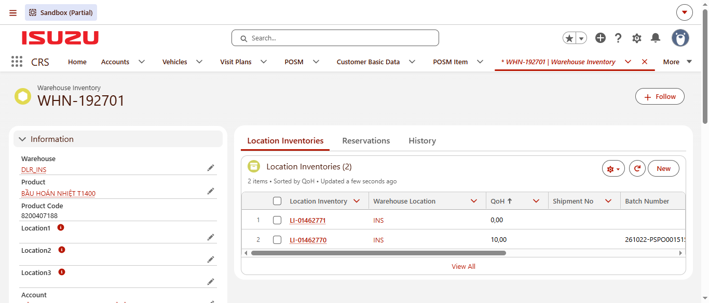
Hình 15 – Bước 11.a: Warehouse Inventory WHN-192701 (kho DLR_INS, sản phẩm 8200407188), QoH = 10. - Bước 11.b Mở SO Return ARSO0004993, nhấn button "Part Delivery Order" trên thanh thao tác. Cửa sổ Create Delivery Order hiện ra, ô Warehouse mặc định là
IACnên Available Physical Qty = 0 và Delivery Qty = 0.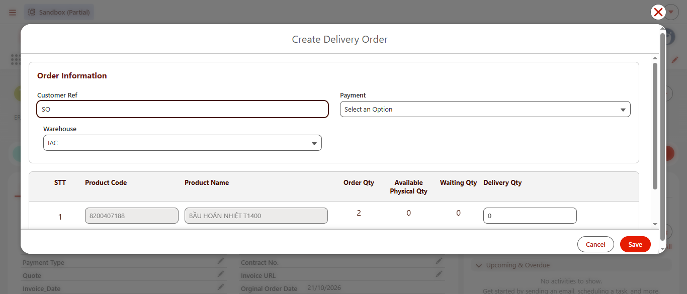
Hình 16 – Bước 11.b: cửa sổ Create Delivery Order, Warehouse mặc định IAC. - Bước 11.c Đổi Warehouse sang DLR_INS, bấm nút Save nhỏ cạnh ô Warehouse để nạp tồn kho của kho này. Dòng sản phẩm
8200407188hiển thị Order Qty = 2, Available Physical Qty = 10, Delivery Qty = 2.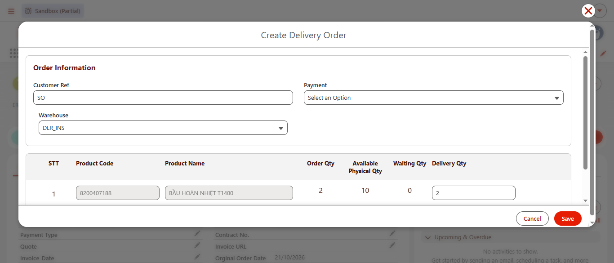
Hình 17 – Bước 11.c: sau khi chọn DLR_INS và bấm Save nhỏ, Available Physical Qty = 10, Delivery Qty = 2. - Bước 11.d Bấm Save ở cuối cửa sổ. Hệ thống tạo Delivery Order và quay lại SO Return; trạng thái SO Return chuyển sang Delivery.
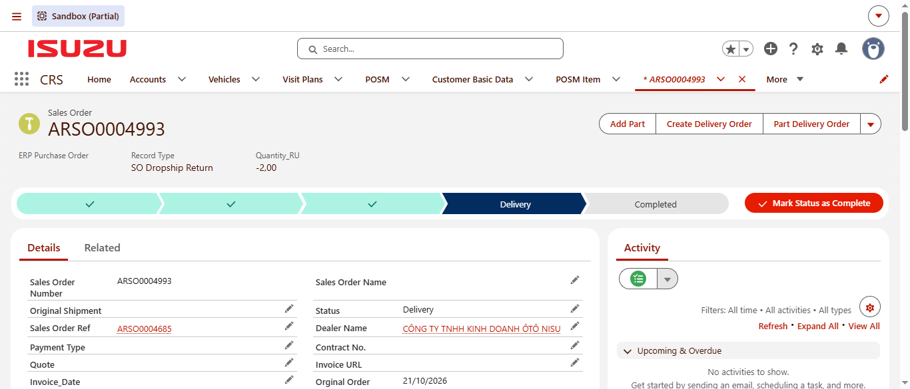
Hình 18 – Bước 11.d: SO Return ARSO0004993 ở trạng thái Delivery sau khi tạo DO. - Bước 11.e Mở DO vừa tạo (DO-20261030-2158): DO-20261030-2158, Record Type DO Return Dropship (DO tạo từ SO Return), trạng thái Draft, kho xuất DLR_INS, Receiving Warehouse = kho IVC của SO gốc; mục Delivery Order Item có sản phẩm
8200407188, Delivery Qty = 2.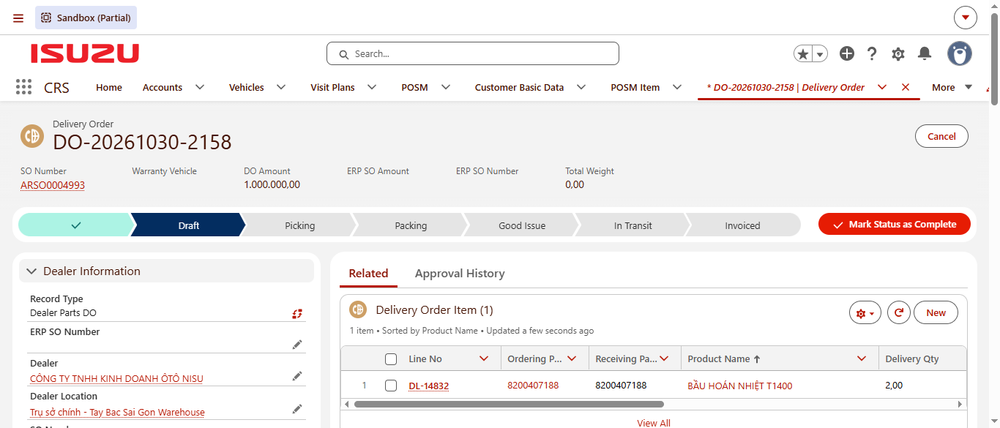
Hình 19 – Bước 11.e: DO-20261030-2158 ở trạng thái Draft.
2.3. Bước 12.1 – Picking (lấy hàng) DLR · Thủ công
Tại DO, thanh trạng thái (Path) đi theo thứ tự Draft → Picking → Packing → Good Issue → In Transit → Invoiced. Phải làm đủ từng bước, không chọn nhảy thẳng sang Invoiced trên Path, vì bỏ qua Picking và Packing thì sẽ không có Goods Issue và không có số lượng đã lấy.
- Bước 12.1.a Ở DO, nhấn Mark Status as Complete để chuyển Draft → Picking. Trên DO xuất hiện button New Picking List.
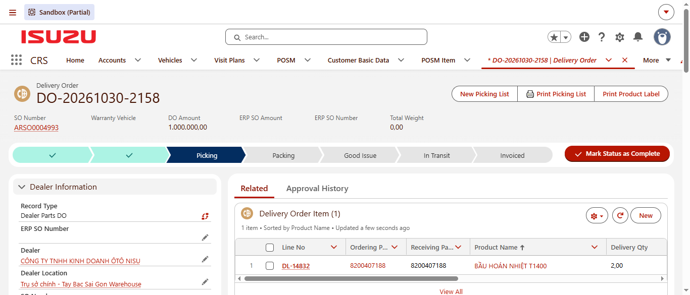
Hình 20 – Bước 12.1.a: DO ở bước Picking, có button New Picking List. - Bước 12.1.b Nhấn New Picking List. Tích chọn dòng sản phẩm
8200407188(Qty 2, vị trí kho INS) rồi nhấn Next.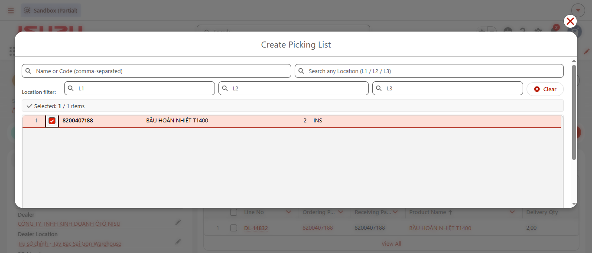
Hình 21 – Bước 12.1.b: chọn dòng sản phẩm cần lấy. - Bước 12.1.c Chọn Device (bắt buộc; là số thứ tự bàn/thiết bị lấy hàng, ví dụ
1), có thể nhập Creator's Name, rồi nhấn Save. Hệ thống tạo Picking List PICK-0350 ở trạng thái Open.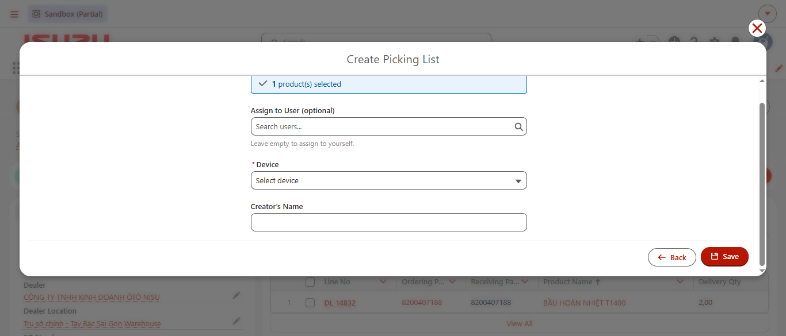
Hình 22 – Bước 12.1.c: chọn Device rồi Save để tạo Picking List. - Bước 12.1.d Mở Picking List, nhấn Picking PC. Cột Picked Qty mặc định bằng số cần lấy (2), từ vị trí INS. Nhấn Save → Xác nhận. Sau đó Total Picking Quantity = 2 (đồng thời DO Item có Picked Quantity = 2).
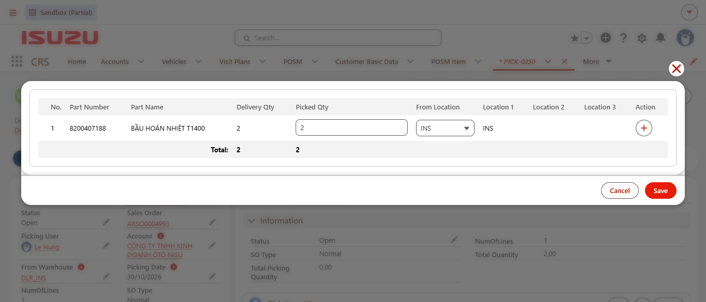
Hình 23 – Bước 12.1.d: màn hình Picking PC, Picked Qty = 2. 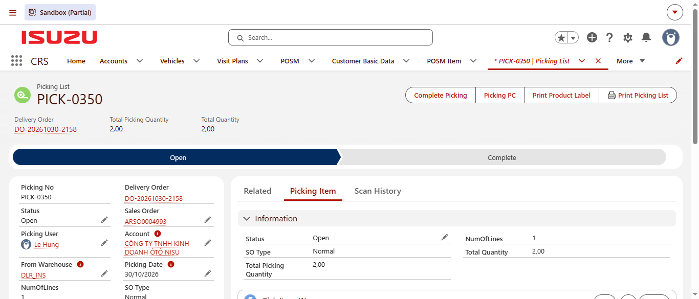
Hình 24 – Bước 12.1.d: PICK-0350 có Total Picking Quantity = 2, trạng thái vẫn Open. - Bước 12.1.e Nhấn Complete Picking → Save. Picking List chuyển Complete.
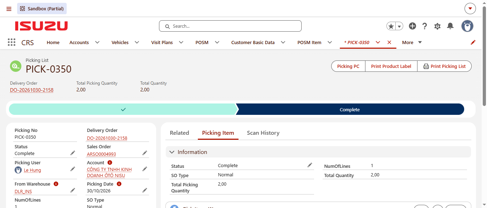
Hình 25 – Bước 12.1.e: PICK-0350 đã Complete. - Bước 12.1.f Quay lại DO, nhấn Mark Status as Complete để chuyển Picking → Packing. Button Create Packing List xuất hiện.
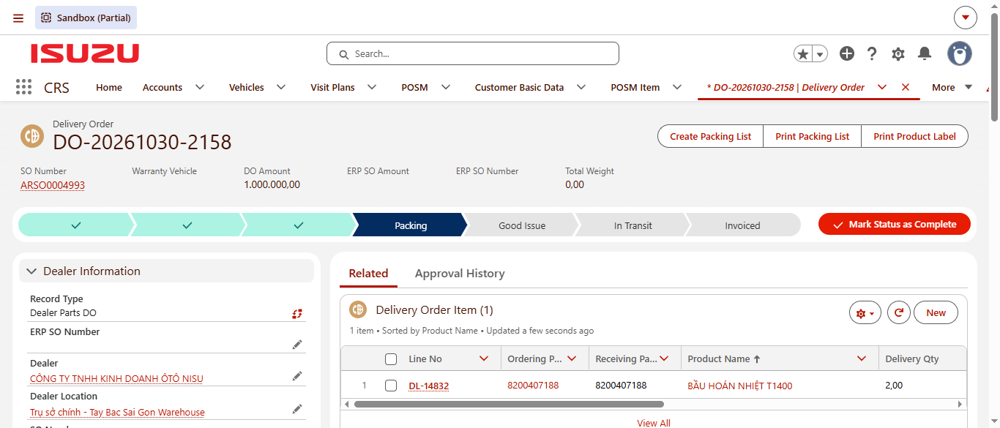
Hình 26 – Bước 12.1.f: DO ở bước Packing, có button Create Packing List.
2.4. Bước 12.2 – Packing (đóng gói) DLR · Thủ công
- Bước 12.2.a Ở DO (bước Packing), nhấn Create Packing List, chọn Device (ví dụ
1) rồi Save. Hệ thống tạo Packing List PACK-00256 ở trạng thái Open.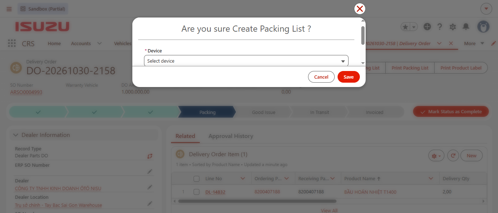
Hình 27 – Bước 12.2.a: chọn Device để tạo Packing List. - Bước 12.2.b Ở Packing List nhấn Create Case Number (thùng hàng): chọn Auto Generate, Số Lượng Cần Tạo = 1, nhập Packing User, Save. Total Cases = 1 và hệ thống sinh mã thùng, ví dụ
DLR_INS-20261030-00033.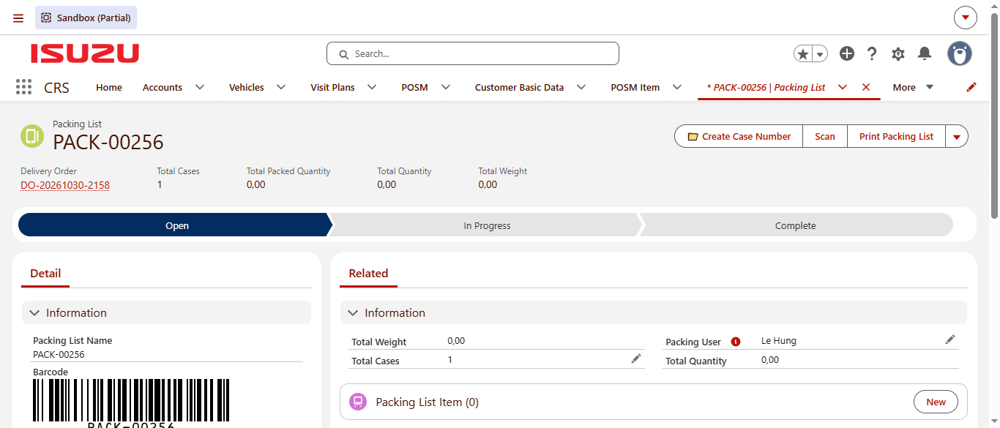
Hình 28 – Bước 12.2.b: Packing List có Total Cases = 1, Packing User đã nhập. - Bước 12.2.c Nhấn Scan. Nhập mã thùng vào Case No. rồi Enter (thông báo "Đã nhận Case mới"), sau đó nhập
8200407188vào Part No. rồi Enter. Dòng sản phẩm hiện ra với Packed Quantity mặc định 1; sửa thành 2.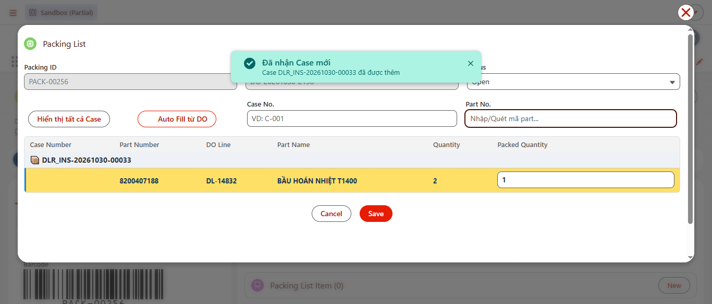
Hình 29 – Bước 12.2.c: thùng DLR_INS-20261030-00033 đã nhận, dòng 8200407188 chờ nhập Packed Quantity. - Bước 12.2.d Nhấn Save. Thông báo "Thành công – Đã lưu Packing List Items", Packed Quantity = 2.
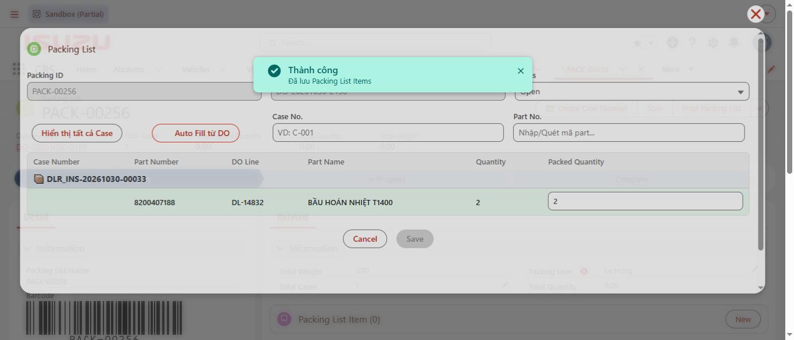
Hình 30 – Bước 12.2.d: đã lưu Packing List Items, Packed Quantity = 2. - Bước 12.2.e Ở Packing List mở menu ▼ cạnh các button, chọn Complete Packing, xác nhận Save. Packing List chuyển Complete (Total Packed Quantity = 2).
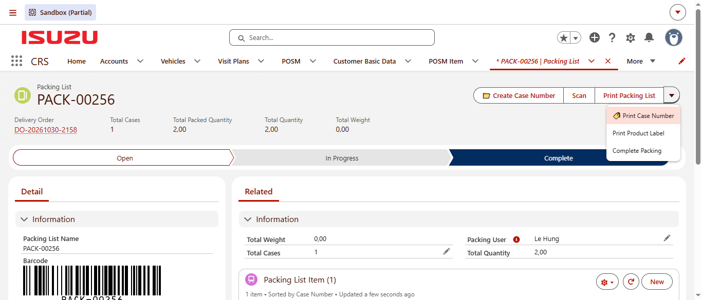
Hình 31 – Bước 12.2.e: chọn Complete Packing trong menu. 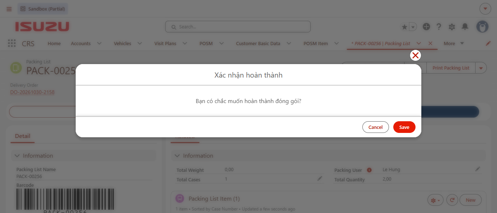
Hình 32 – Bước 12.2.e: xác nhận hoàn thành đóng gói. Ảnh bổ sung sau: Hình 33 – Packing List PACK-00256 ở trạng thái CompleteHình 33 – Bước 12.2.e: PACK-00256 đã Complete.
2.5. Bước 12.3 – Good Issue và SO Return tự Completed DLR · Thủ công Tự động
- Bước 12.3.a Quay lại DO, nhấn Mark Status as Complete để chuyển Packing → Good Issue. Trên DO xuất hiện button Create Goods Issue. Tự động Khi DO đạt Good Issue, hệ thống tự chuyển SO Return sang Completed (trigger
completeSORDropshipReturnWhenDODelivered; cũng áp dụng khi DO đạt Invoiced hoặc Delivered).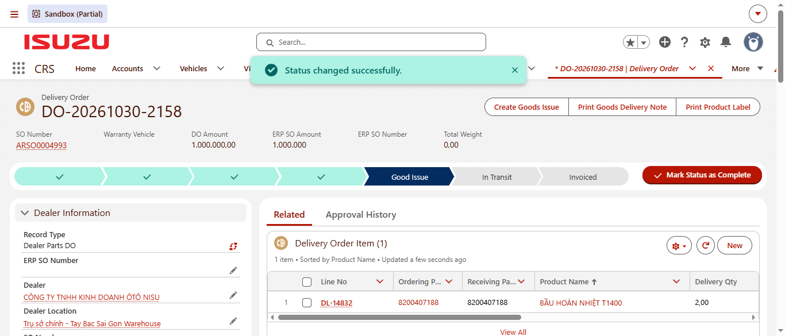
Hình 34 – Bước 12.3.a: DO ở bước Good Issue, có button Create Goods Issue. - Bước 12.3.b Nhấn Create Goods Issue → xác nhận Save. Hệ thống tạo phiếu xuất kho Parts Issue Note GIP-20261030-00001 ở trạng thái Completed, tổng số lượng 2.
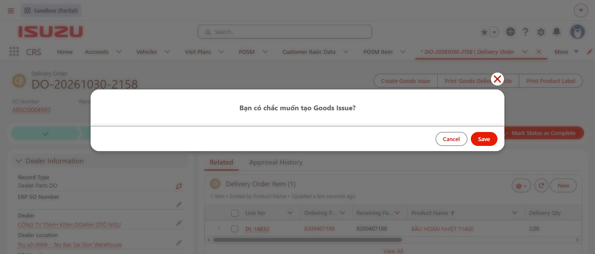
Hình 35 – Bước 12.3.b: xác nhận tạo Goods Issue. Ảnh bổ sung sau: Hình 36 – Parts Issue Note GIP-20261030-00001, Status = Completed, qty = 2Hình 36 – Bước 12.3.b: phiếu Goods Issue GIP-20261030-00001 đã Completed. - Bước 12.3.c Mở lại SO Return ARSO0004993: thanh trạng thái đã Completed (button Mark Status as Complete chuyển xám). Menu ▼ có action Create Offset SO (dùng ở Bước 14).
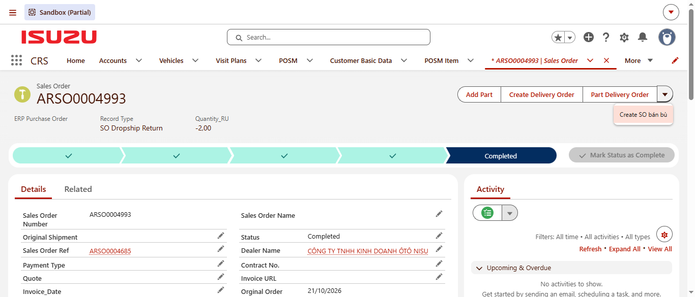
Hình 37 – Bước 12.3.c: SO Return Completed, menu hiển thị Create SO bán bù (nay đổi tên thành Create Offset SO).
2.6. Bước 13 – Xác nhận tồn kho Đại lý đã giảm Chờ data sync
SF_ITB_Temp giảm 100 → 0. Đây là khác biệt so với Dealer Parts DO (DMS không tự trừ, chỉ đổi khi ERP gửi hook InventSum). Số liệu từ ERP gửi về qua InventSum vẫn là nguồn đối chiếu cuối cùng; nếu ERP chưa ghi nhận xuất kho thì chưa có hook cho item/kho này.
- Bước 13.a Chờ data sync Tồn kho DMS đã giảm ngay khi Goods Issue Completed (xem callout trên). Phần còn lại là chờ ERP ghi nhận xuất kho và đẩy tồn kho về DMS để đối chiếu.
- Bước 13.b Kiểm tra hook tồn kho: mở D365FO_Hook mới nhất có Function = InventSum của item
8200407188, khoDLR_INS(trong Input:InventLocationId= DLR_INS,ItemId= 8200407188,AvailPhysical= 8). isRun và isSuccess được tích, Message ghi "D365FO InventSum temp Created/Updated Successfully". Hook InventSum của item/kho khác (ví dụ DLR_ITB) không phải kết quả của DO này. - Bước 13.c Vào lại Warehouse → DLR_INS → Warehouse Inventories, mở sản phẩm
8200407188: tồn kho (QoH) giảm từ 10 xuống 8 (đúng 2 cái xuất trả).Ảnh bổ sung sau: Hình 38 – Tồn kho DLR_INS sau khi ERP đồng bộ (kỳ vọng QoH = 8). Hiện tại, chưa đồng bộ, vẫn QoH = 10.Hình 38 – Bước 13.c: tồn kho kho DLR_INS sau khi data sync về.
InventSum sau khi Goods Issue đều trả về rỗng ("Success but no new data") vì ERP chưa có thay đổi tồn nào của item này. Cần người dùng ERP ghi nhận xuất kho cho SO Return thì mới có dữ liệu đối chiếu.
2.7. Bước 14 – Create Offset SO (SO bán bù) từ SO Return đã Completed DLR · Thủ công
Chỉ phụ thuộc SO Return đã Completed (Bước 12.3), không phải chờ tồn kho đồng bộ ở Bước 13. Nút Create Offset SO có trên trang SO của AFS (và trên SO Return); người dùng chọn SO Return và Shipment return (Shipment gốc) rồi tạo SO bán bù.
- Bước 14.a Mở SO (SO Return đã Completed hoặc SO bất kỳ trên giao diện AFS), mở thanh thao tác hoặc menu ▼, chọn Create Offset SO. Cửa sổ hiển thị:
- SO Return: chỉ liệt kê SO Dropship Return đã Completed và cùng Purchase Order với SO đang mở nút (mở từ SO Return thì lấy PO của chính nó và chọn sẵn). SO chưa có PO, hoặc PO chưa có SO Return Completed, thì form báo không có SO Return nào.
- Shipment return (Shipment gốc): các Shipment của SO gốc, kể cả Shipment đã Cancelled (ví dụ
SM-000399 (Cancelled) - SF_ITB); Shipment đã gắn với Return DO của SO Return được chọn sẵn. - Khung thông tin: SO Return, SO gốc, Warehouse và ERP Default Dimension của SO gốc.
- Bảng sản phẩm: mã SP, SL Return (số dương), SL bán bù (mặc định bằng SL Return, tối đa SL Return), Đơn giá (SO gốc).
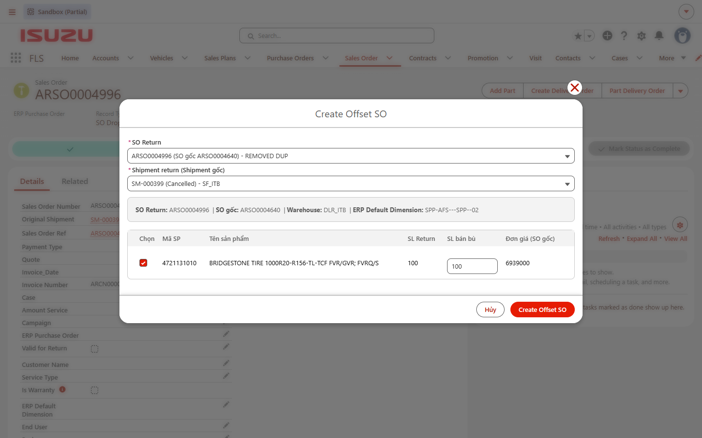
Hình 39 – Bước 14.a: cửa sổ Create Offset SO (SO Return ARSO0004996, Shipment gốc SM-000399, đơn giá lấy theo SO gốc). - Bước 14.b Chọn sản phẩm cần bán bù, chỉnh SL bán bù nếu cần, nhấn Create Offset SO. Hệ thống tạo Sales Order mới và chuyển sang trang SO đó.
- Bước 14.c Kiểm tra SO mới (ví dụ ARSO0005008): Record Type DLR Part Sales Order, trạng thái Draft (chưa có trên ERP); Warehouse và ERP Default Dimension giống SO gốc; Đại lý, Purchase Order lấy theo SO gốc; Sales Order Ref trỏ về SO Return; Original Shipment trỏ về Shipment gốc; dòng item có số lượng dương, đơn giá, thuế (VAT), thành tiền giống dòng SO gốc (thành tiền quy đổi theo SL bán bù; Discount Amount tính trên mỗi đơn vị nên giữ nguyên, không quy đổi).
Ảnh bổ sung sau: Hình 40 – SO bán bù ARSO0005008 (Draft, Warehouse DLR_ITB, Original Shipment SM-000399, đơn giá 6.939.000)
Hình 40 – Bước 14.c: Offset SO ARSO0005008 vừa tạo. - Bước 14.d Kiểm tra xong, bấm Open trên SO bán bù: lúc này SO mới được tạo ở ERP (hook
CreateSO). Từ đó xử lý SO như SO thông thường.
2.8. Auto-complete DO (làm nhanh Bước 12.1 → 12.3) DLR · Thủ công
Thay vì đi từng bước Picking, Packing, Good Issue, người dùng có thể bấm Auto-complete DO trên DO. Nút này hoạt động với DO Return Dropship (và Customer Part DO), khi DO đang ở Draft hoặc Good Issue (DO do ERP hook 8_PostPacking tạo thường đã ở Good Issue).
- Auto.a Mở DO trả hàng (ví dụ DO-20261030-2159), kiểm tra Record Type DO Return Dropship, kho xuất và kho nhận đúng (Issuing = kho Đại lý, Receiving = kho IVC).
- Auto.b Nhấn Auto-complete DO. Hệ thống tự: tạo Picking List (lấy hàng từ location có tồn, kể cả location Waiting/Temp của Đại lý) và hoàn tất; tạo và hoàn tất Parts Issue Note; trừ tồn kho location đã lấy; đưa DO về Good Issue; SO Return tự Completed.
- Auto.c Kiểm tra kết quả ở tab Related của DO: Picking List (ví dụ PICK-0357, Complete) và Parts Issue Note (ví dụ GIP-20261030-00006, Completed, số lượng 100). Không có Packing List vì Auto-complete bỏ qua bước đóng gói (Packed Quantity để trống); đây là thiết kế của nút này.
2.9. Kết quả test luồng DLR Stock (Partial, 30/10/2026; bổ sung 02/11/2026)
| Bước | Kiểm tra | Kết quả | Ghi chú |
|---|---|---|---|
| Đầu vào | SO Return được ERP gửi qua hook SO_Return | Đạt (hook chèn thủ công) | DH-00188565: ARSO0004993, Open. Chờ webhook ERP khi chạy thật. |
| 11.a | Tồn kho DLR_INS trước xuất | Đạt | QoH = 10 |
| 11.b–11.e | Tạo Part DO từ SO Return | Đạt | DO-20261030-2158, Draft, kho DLR_INS, SL 2; SO Return sang Delivery (test ngày 30/10, lúc đó DO còn là Dealer Parts DO; từ 11/2026 là DO Return Dropship) |
| 12.1 | Picking | Đạt | PICK-0350 Complete, Picked Qty = 2 |
| 12.2 | Packing | Đạt | PACK-00256 Complete, 1 thùng, Packed Qty = 2 |
| 12.3 | Good Issue, SO Return tự Completed | Đạt | DO Good Issue; GIP-20261030-00001 Completed (qty 2); ARSO0004993 Completed |
| 13 | Tồn kho DLR_INS giảm 10 → 8 | Chờ data sync | Test 30/10 với Dealer Parts DO: DMS không trừ, QoH vẫn 10. Từ 11/2026 DO Return Dropship được DMS trừ khi Goods Issue Completed; ERP chưa gửi InventSum cho item này. |
| 14 | Tạo SO bán bù | Đạt | ARSO0004995: DLR Part Sales Order, Open, Sales Order Ref = ARSO0004993, item 8200407188 SL +2 (test 30/10, bản cũ) |
| Bổ sung 02/11/2026 (Partial và QA) | |||
| 11, 8 | Return DO có RT DO Return Dropship, kho xuất / kho nhận đúng | Đạt | DO-20261030-2159: RT DO Return Dropship, Issuing = SF_ITB, Receiving = DLR_ITB (chạy lại hook 8_PostPacking) |
| 11 | DO Return Dropship không sync ERP, không tạo Shipment nhập kho | Đạt | Test tự động xác nhận không sinh hook CreateDOPart |
| Auto | Auto-complete DO cho DO Return Dropship (Draft và Good Issue) | Đạt | PICK-0357 Complete, GIP-20261030-00006 Completed (100); không có Packing List; test tự động xác nhận tồn location giảm |
| 14 | Create Offset SO | Đạt | ARSO0005008: Draft, Warehouse DLR_ITB, ERP Default Dimension SPP-AFS---SPP--02, Original Shipment SM-000399, đơn giá 6.939.000, VAT08, thành tiền 693.900.000 giống SO gốc |
| 10.e | ERP gửi lặp Sync_InvoiceSO khi SO đã Completed | Đạt | Test tự động: SO không đổi nhưng vẫn gắn Shipment gốc đã nhập kho |